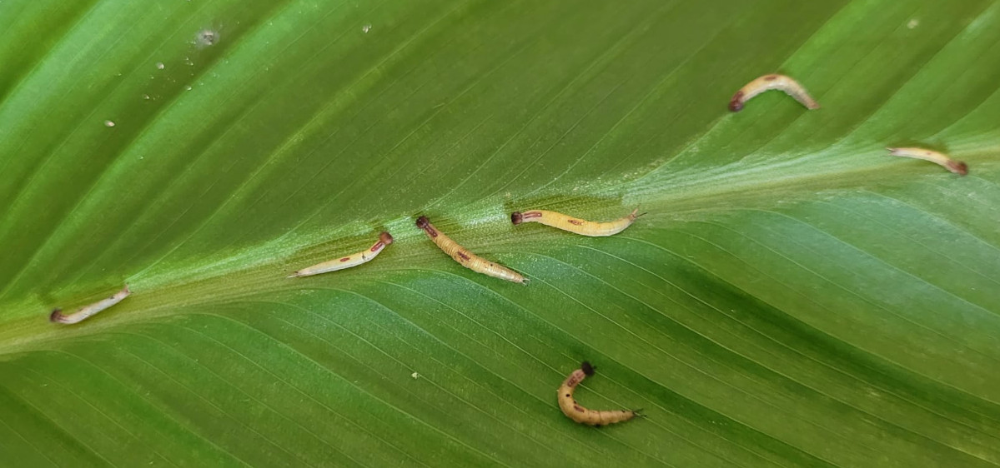
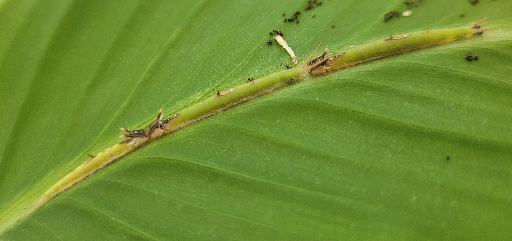
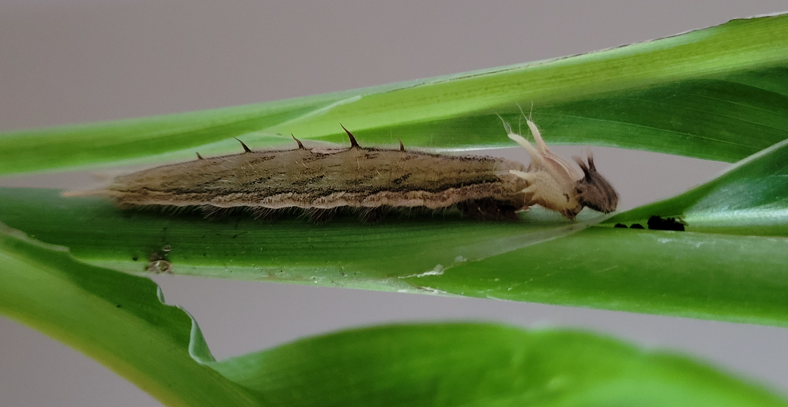

Z Motylarni dostałam 7 gąsienic motyla Caligo Memnon i 2 jaja. Z jaj niestety nic się nie wykluło. Tuż po wykluciu gąsienice mają mniej więcej 3 mm, czego dowiedziałam się od kolegi, któremu z jaja wykluła się gąsieniczka. Nasze gąsienice w momencie, kiedy je dostaliśmy miały około 1 cm długości. Szybko pozostało ich tylko 4, pozostałe zdechły.
Gąsiennice

Te, które pozostały jadły bardzo dużo, rosły i przechodziły kolejne wylinki. Po każdej wylince zmieniał się ich wygląd. Na początku były zielone.

Później stały się brązowe. Podczas wylinki zrzucały osobno oskórek z tułowia, a osobno z głowy. Sprawiało to wrażenie, jakby przez chwilę miały dwie głowy.

Głowa była włochata, wyrastały na niej małe „różki”, ciało stawało się coraz bardziej włochate, brązowe, na tułowiu pojawiły się kolce. Gdy gąsienice były już duże zbudowaliśmy im terrarium z kartonu i moskitiery w obawie przed ich ucieczką w poszukiwaniu miejsca na przepoczwarzenie. W sumie przez cały wrzesień nasze gąsienice zjadły cztery rośliny żywicielskie.